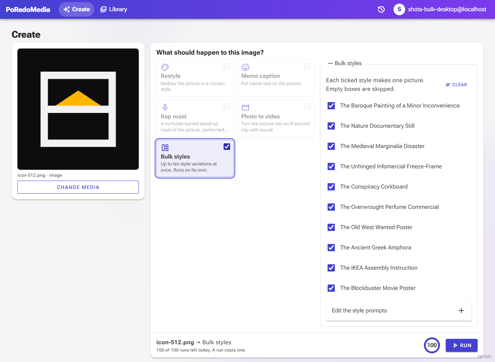
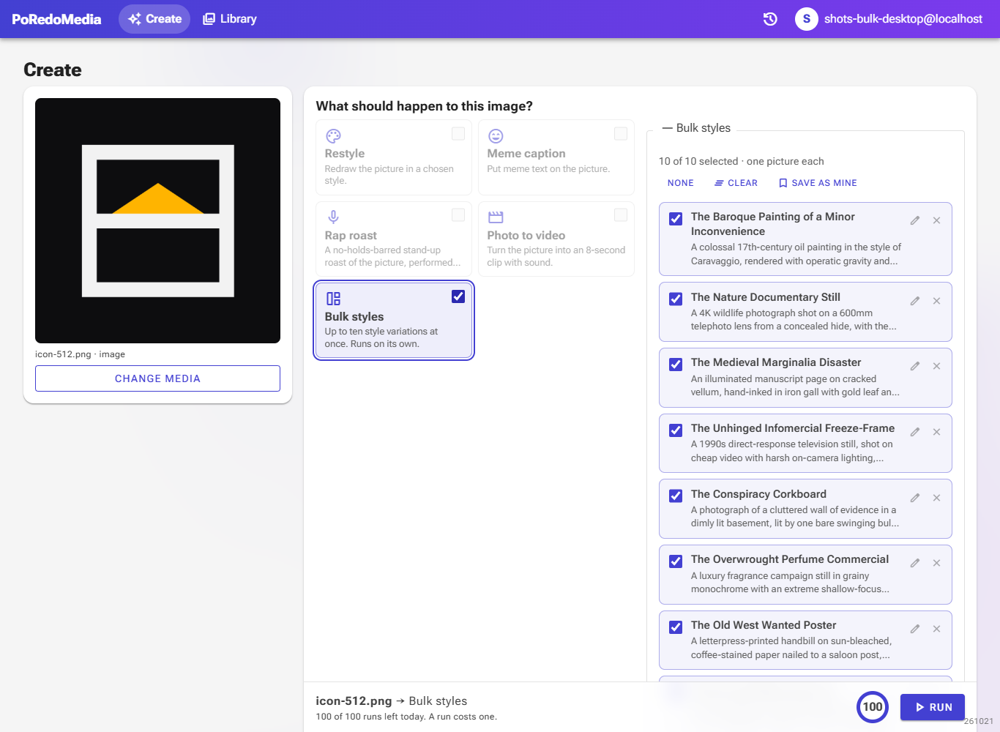
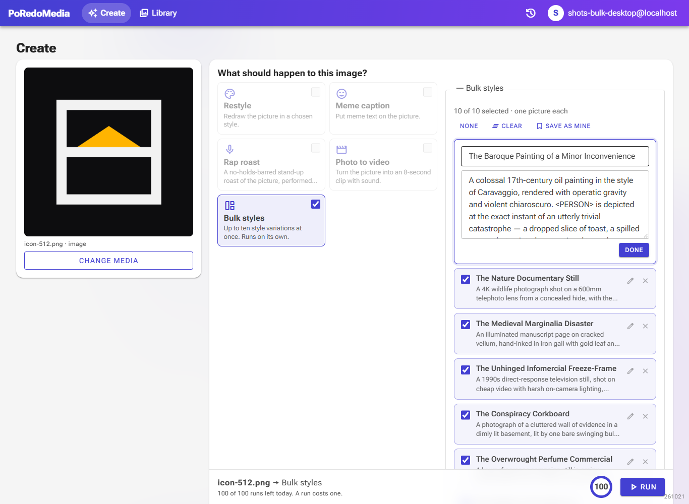
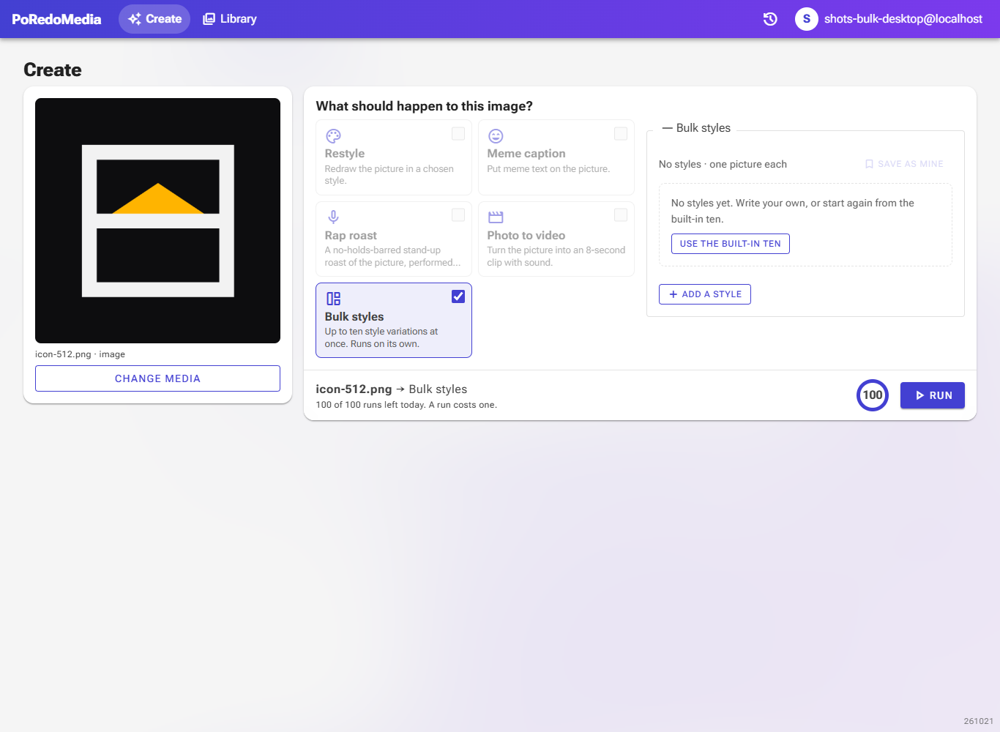
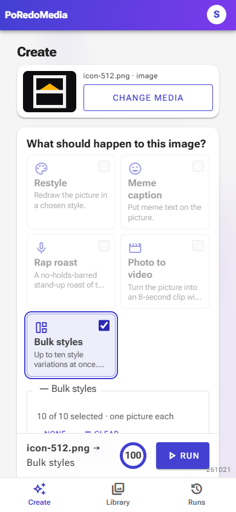

Bulk styles: one list of style cards, edited in place
Before and after, captured headless with Playwright at 1366×1000, Development environment, a fresh dev user with one uploaded picture and Bulk styles ticked, on 2026-10-21. The before list shows ten bare checkboxes; the after list is longer, so its screenshot cuts off part-way down.
ListCards with a name and a preview
Each style is now a card: a tick, its name in bold and the first two lines of what it looks like. Ticked cards are tinted; unticked ones fade. A count and the All/None, Clear and Save-as-mine actions sit above the list.


EditEdit one style where it is
The panel of ten raw text boxes (name and description run together) is gone. The pencil opens just that card, with a separate name field and description box, and Done closes it.

EmptyClear, then start again or write your own
After Clear the list says so and offers the built-in ten back; "Add a style" opens a new empty card. An empty style is never drawn.


- Removed: the separate tick list and the collapsed panel of ten raw text boxes.
- Added: style cards, All/None, a selected count, per-card edit and remove, Add a style, Use the built-in ten.
- Unchanged: what is sent (only ticked, non-empty styles) and how a saved set is stored ("Name: description").